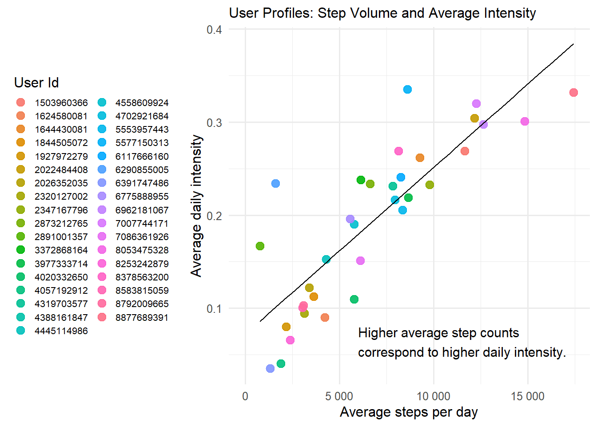
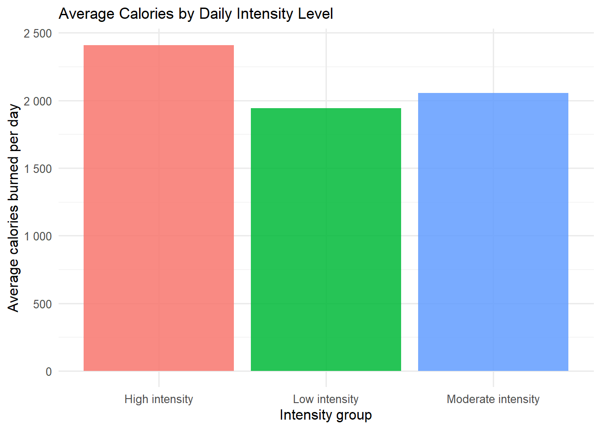

The chart reveals a direct relationship between step volume and average intensity: the more users walk, the higher their sustained effort. The correlation is linear: higher volume is accompanied by higher intensity, reflecting a combination of quantity and quality of effort.
A few atypical users exhibit few steps but high intensity, suggesting short but intense workouts.
The most active users combine frequent movement with sustained effort, whereas the least active users remain close to sedentary behavior.

Three levels stand out clearly:
Intensity is therefore a key driver of energy expenditure, beyond step count. This hierarchical relationship allows segmentation of user profiles and supports recommendations encouraging more sustained effort to increase daily calorie burn.